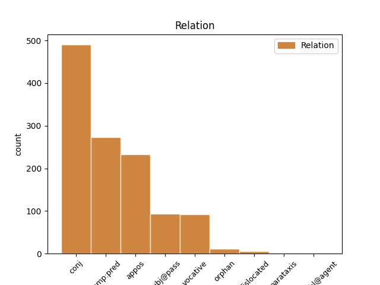
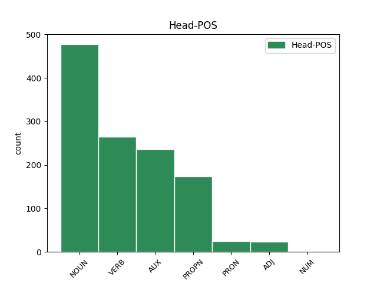
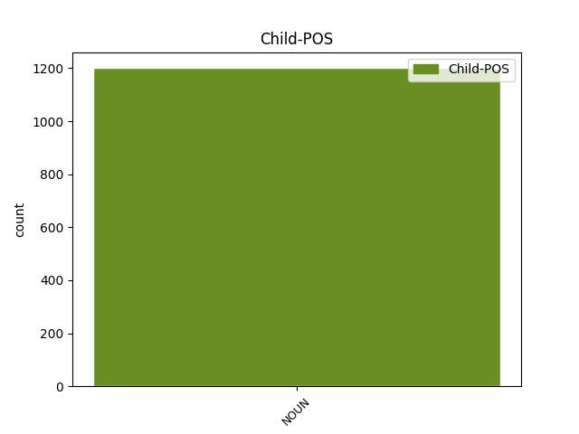

Distribution of features within this leaf



Agreement Rules sorted by frequency.
- When the dependent token is the conjunct(conj) of the head token, and the dependent token is NOUN.
1 aþþan _ _ _ _ 0 _ _ _
2 all _ _ _ _ 0 _ _ _
3 hrain _ _ _ _ 0 _ _ _
4 hrainjaim _ _ _ _ 0 _ _ _
5 iþ _ _ _ _ 0 _ _ _
6 bisaulidaim _ _ _ _ 0 _ _ _
7 jah _ _ _ _ 0 _ _ _
8 ungalaubjandam _ _ _ _ 0 _ _ _
9 ni _ _ _ _ 0 _ _ _
10 waiht _ _ _ _ 0 _ _ _
11 hrain _ _ _ _ 0 _ _ _
12 ak _ _ _ _ 0 _ _ _
13 bisaulida _ _ _ _ 0 _ _ _
14 sind _ _ _ _ 0 _ _ _
15 ize _ _ _ _ 0 _ _ _
16 jah _ _ _ _ 0 _ _ _
17 aha aha NOUN Nb Case=Nom|Gender=Masc|Number=Sing 0 _ _ _
18 jah _ _ _ _ 0 _ _ _
19 miþwissei miþwissei NOUN Nb Case=Nom|Gender=Fem|Number=Sing 17 conj _ ref=TIT_1.15
1 qaþ _ _ _ _ 0 _ _ _
2 auk _ _ _ _ 0 _ _ _
3 sums sums ADJ Px Case=Nom|Gender=Masc|Number=Sing 0 _ _ _
4 ize _ _ _ _ 0 _ _ _
5 swes _ _ _ _ 0 _ _ _
6 ize _ _ _ _ 0 _ _ _
7 praufetus praufetes NOUN Nb Case=Nom|Gender=Masc|Number=Sing 3 appos _ ref=TIT_1.12
1 so _ _ _ _ 0 _ _ _
2 ist wisan AUX V- Mood=Ind|Number=Sing|Person=3|Tense=Pres|VerbForm=Fin|Voice=Act 0 _ _ _
3 weitwodei weitwodei NOUN Nb Case=Nom|Gender=Fem|Number=Sing 2 comp:pred _ ref=TIT_1.13
4 sunjeina _ _ _ _ 0 _ _ _
1 þaþroh _ _ _ _ 0 _ _ _
2 galagiþs _ _ _ _ 0 _ _ _
3 ist wisan AUX V- Mood=Ind|Number=Sing|Person=3|Tense=Pres|VerbForm=Fin|Voice=Act 0 _ _ _
4 mis _ _ _ _ 0 _ _ _
5 waips waips NOUN Nb Case=Nom|Gender=Masc|Number=Sing 3 subj@pass _ ref=2TIM_4.8
6 garaihteins _ _ _ _ 0 _ _ _
7 þanei _ _ _ _ 0 _ _ _
8 usgibiþ _ _ _ _ 0 _ _ _
9 mis _ _ _ _ 0 _ _ _
10 frauja _ _ _ _ 0 _ _ _
11 in _ _ _ _ 0 _ _ _
12 jainamma _ _ _ _ 0 _ _ _
13 daga _ _ _ _ 0 _ _ _
14 sa _ _ _ _ 0 _ _ _
15 garaihta _ _ _ _ 0 _ _ _
16 staua _ _ _ _ 0 _ _ _
17 aþþan _ _ _ _ 0 _ _ _
18 ni _ _ _ _ 0 _ _ _
19 þatainei _ _ _ _ 0 _ _ _
20 mis _ _ _ _ 0 _ _ _
21 ak _ _ _ _ 0 _ _ _
22 jah _ _ _ _ 0 _ _ _
23 allaim _ _ _ _ 0 _ _ _
24 þaiei _ _ _ _ 0 _ _ _
25 frijond _ _ _ _ 0 _ _ _
26 qum _ _ _ _ 0 _ _ _
27 is _ _ _ _ 0 _ _ _
1 iþ _ _ _ _ 0 _ _ _
2 þu _ _ _ _ 0 _ _ _
3 jai _ _ _ _ 0 _ _ _
4 manna manna NOUN Nb Case=Voc|Gender=Masc|Number=Sing 7 vocative _ LId=2|ref=1TIM_6.11
5 gudis _ _ _ _ 0 _ _ _
6 þata _ _ _ _ 0 _ _ _
7 þliuhais þliuhan VERB V- Mood=Opt|Number=Sing|Person=2|Tense=Pres|VerbForm=Fin|Voice=Act 0 _ _ _
8 iþ _ _ _ _ 0 _ _ _
9 laistjais _ _ _ _ 0 _ _ _
10 garaihtein _ _ _ _ 0 _ _ _
11 gagudein _ _ _ _ 0 _ _ _
12 galaubein _ _ _ _ 0 _ _ _
13 frijaþwa _ _ _ _ 0 _ _ _
14 þulain _ _ _ _ 0 _ _ _
15 qairrein _ _ _ _ 0 _ _ _
1 ni _ _ _ _ 0 _ _ _
2 auk _ _ _ _ 0 _ _ _
3 manna _ _ _ _ 0 _ _ _
4 ƕanhun _ _ _ _ 0 _ _ _
5 sein _ _ _ _ 0 _ _ _
6 leik _ _ _ _ 0 _ _ _
7 fijaida _ _ _ _ 0 _ _ _
8 ak _ _ _ _ 0 _ _ _
9 fodeiþ _ _ _ _ 0 _ _ _
10 ita _ _ _ _ 0 _ _ _
11 jah _ _ _ _ 0 _ _ _
12 warmeiþ _ _ _ _ 0 _ _ _
13 swaswe _ _ _ _ 0 _ _ _
14 jah _ _ _ _ 0 _ _ _
15 Xristus Xristus PROPN Ne Case=Nom|Gender=Masc|Number=Sing 0 _ _ _
16 aikklesjon aikklesjo NOUN Nb Case=Acc|Gender=Fem|Number=Sing 15 orphan _ ref=EPH_5.29
1 aþþan _ _ _ _ 0 _ _ _
2 sa _ _ _ _ 0 _ _ _
3 parakletus parakletus NOUN Nb Case=Nom|Gender=Masc|Number=Sing 15 dislocated _ ref=JOHN_14.26
4 ahma _ _ _ _ 0 _ _ _
5 sa _ _ _ _ 0 _ _ _
6 weiha _ _ _ _ 0 _ _ _
7 þanei _ _ _ _ 0 _ _ _
8 sandeiþ _ _ _ _ 0 _ _ _
9 atta _ _ _ _ 0 _ _ _
10 in _ _ _ _ 0 _ _ _
11 namin _ _ _ _ 0 _ _ _
12 meinamma _ _ _ _ 0 _ _ _
13 sa _ _ _ _ 0 _ _ _
14 izwis _ _ _ _ 0 _ _ _
15 laiseiþ laisjan VERB V- Mood=Ind|Number=Sing|Person=3|Tense=Pres|VerbForm=Fin|Voice=Act 0 _ _ _
16 allata _ _ _ _ 0 _ _ _
17 jah _ _ _ _ 0 _ _ _
18 gamaudeiþ _ _ _ _ 0 _ _ _
19 izwis _ _ _ _ 0 _ _ _
20 allis _ _ _ _ 0 _ _ _
21 þatei _ _ _ _ 0 _ _ _
22 qaþ _ _ _ _ 0 _ _ _
23 du _ _ _ _ 0 _ _ _
24 izwis _ _ _ _ 0 _ _ _
1 þan _ _ _ _ 0 _ _ _
2 qiþand _ _ _ _ 0 _ _ _
3 gawairþi gawairþi NOUN Nb Case=Nom|Gender=Neut|Number=Sing 9 parataxis _ ref=1THESS_5.3
4 jah _ _ _ _ 0 _ _ _
5 tulgiþa _ _ _ _ 0 _ _ _
6 þanuh _ _ _ _ 0 _ _ _
7 unweniggo _ _ _ _ 0 _ _ _
8 ins _ _ _ _ 0 _ _ _
9 biqimiþ bi-qiman VERB V- Mood=Ind|Number=Sing|Person=3|Tense=Pres|VerbForm=Fin|Voice=Act 0 _ _ _
10 fralusts _ _ _ _ 0 _ _ _
11 swaswe _ _ _ _ 0 _ _ _
12 sair _ _ _ _ 0 _ _ _
13 qiþuhafton _ _ _ _ 0 _ _ _
14 jah _ _ _ _ 0 _ _ _
15 ni _ _ _ _ 0 _ _ _
16 unþaþliuhand _ _ _ _ 0 _ _ _
Disagree Examples:
1 jah _ _ _ _ 0 _ _ _
2 warþ _ _ _ _ 0 _ _ _
3 biþe _ _ _ _ 0 _ _ _
4 is _ _ _ _ 0 _ _ _
5 anakumbida _ _ _ _ 0 _ _ _
6 in _ _ _ _ 0 _ _ _
7 garda _ _ _ _ 0 _ _ _
8 jah _ _ _ _ 0 _ _ _
9 sai _ _ _ _ 0 _ _ _
10 managai _ _ _ _ 0 _ _ _
11 motarjos _ _ _ _ 0 _ _ _
12 jah _ _ _ _ 0 _ _ _
13 frawaurhtai _ _ _ _ 0 _ _ _
14 qimandans _ _ _ _ 0 _ _ _
15 miþanakumbidedun _ _ _ _ 0 _ _ _
16 Iesua Iesus PROPN Ne Case=Dat|Gender=Masc|Number=Sing 0 _ _ _
17 jah _ _ _ _ 0 _ _ _
18 siponjam siponeis NOUN Nb Case=Dat|Gender=Masc|Number=Plur 16 conj _ ref=MATT_9.10
19 is _ _ _ _ 0 _ _ _
1 jah _ _ _ _ 0 _ _ _
2 urreisands _ _ _ _ 0 _ _ _
3 Iesus Iesus PROPN Ne Case=Nom|Gender=Masc|Number=Sing 0 _ _ _
4 iddja _ _ _ _ 0 _ _ _
5 afar _ _ _ _ 0 _ _ _
6 imma _ _ _ _ 0 _ _ _
7 jah _ _ _ _ 0 _ _ _
8 siponjos siponeis NOUN Nb Case=Nom|Gender=Masc|Number=Plur 3 conj _ ref=MATT_9.19
9 is _ _ _ _ 0 _ _ _
1 jah _ _ _ _ 0 _ _ _
2 qimands _ _ _ _ 0 _ _ _
3 Iesus _ _ _ _ 0 _ _ _
4 in _ _ _ _ 0 _ _ _
5 garda _ _ _ _ 0 _ _ _
6 þis _ _ _ _ 0 _ _ _
7 reikis _ _ _ _ 0 _ _ _
8 jah _ _ _ _ 0 _ _ _
9 gasaiƕands _ _ _ _ 0 _ _ _
10 swigljans swiglja* NOUN Nb Case=Acc|Gender=Masc|Number=Plur 0 _ _ _
11 jah _ _ _ _ 0 _ _ _
12 managein managei NOUN Nb Case=Acc|Gender=Fem|Number=Sing 10 conj _ ref=MATT_9.23
13 auhjondein _ _ _ _ 0 _ _ _
14 qaþ _ _ _ _ 0 _ _ _
15 du _ _ _ _ 0 _ _ _
16 im _ _ _ _ 0 _ _ _
1 allai _ _ _ _ 0 _ _ _
2 auk _ _ _ _ 0 _ _ _
3 praufeteis praufetes NOUN Nb Case=Nom|Gender=Masc|Number=Plur 0 _ _ _
4 jah _ _ _ _ 0 _ _ _
5 witoþ witoþ NOUN Nb Case=Nom|Gender=Neut|Number=Sing 3 conj _ ref=MATT_11.13
6 und _ _ _ _ 0 _ _ _
7 Iohanne _ _ _ _ 0 _ _ _
8 fauraqeþun _ _ _ _ 0 _ _ _
1 ƕan _ _ _ _ 0 _ _ _
2 uh _ _ _ _ 0 _ _ _
3 þan _ _ _ _ 0 _ _ _
4 þuk _ _ _ _ 0 _ _ _
5 seƕum saiƕan VERB V- Mood=Ind|Number=Plur|Person=1|Tense=Past|VerbForm=Fin|Voice=Act 0 _ _ _
6 gast gasts NOUN Nb Case=Acc|Gender=Masc|Number=Sing 5 comp:pred _ ref=MATT_25.38
7 jah _ _ _ _ 0 _ _ _
8 galaþodedum _ _ _ _ 0 _ _ _